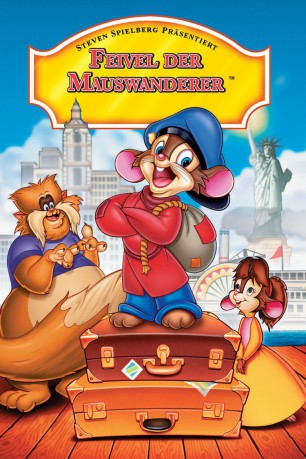

#1283 Feivel, der Mauswanderer 1
Alternativ: An American Tail
Auszeichnungen: für 1 Oscars nominiert
 
 IMDB-Wertung: 6.9 / 10
IMDB-Wertung: 6.9 / 10  Metascore: 38
Metascore: 38 
Im fernen Rußland beginnt Ende des letzten Jahrhunderts die große Auswanderung nach Amerika. Unter den Emigranten ist auch Feivel und seine ganze Mäusefamilie, denn es hat sich unter den Nagern herumgesprochen, daß es in der neuen Heimat keine Katzen gibt. Während der Überfahrt in die Staaten wird Feivel über Bord gespült und seine Familie hält ihn für tot. Weit gefehlt. Der tapfere Mäuserich rettet sich in eine treibende Flasche und wird einige Stunden später in New York an Land gespült. Nun beginnt seine abenteuerliche Suche in den Straßenschluchten der Großstadt, wo an jeder Ecke Feinde und natürlich Katzen lauern. Doch der tapfere Feivel ist sicher, daß er irgendwann seine Eltern und seine Schwester Tanya finden wird...
Jahr: 1986
Dauer: 80 Minuten
FSK: 6
Land: USA Studio: Universal PicturesTonspuren:
Untertitel:
Auflösung: SD (640x352) Größe: 699 MB
Genre: Animation/Trick, Abenteuer, Komödie, Drama, Familie, Musical
Regisseur: Don Bluth
Drehbuch: Judy Freudberg, Tony Geiss, David Kirschner, Judy Freudberg, Tony Geiss
Soundtrack: James Horner
Darsteller:
 Nehemiah Persoff als Papa Mousekewitz
Nehemiah Persoff als Papa Mousekewitz- Phillip Glasser als Fievel Mousekewitz
 Christopher Plummer als Henri
Christopher Plummer als Henri John Finnegan als Warren T. Rat
John Finnegan als Warren T. Rat Will Ryan als Digit
Will Ryan als Digit Hal Smith als Moe
Hal Smith als Moe Neil Ross als Honest John
Neil Ross als Honest John Madeline Kahn als Gussie Mausheimer
Madeline Kahn als Gussie Mausheimer Dom DeLuise als Tiger
Dom DeLuise als Tiger- Erica Yohn als Mama Mousekewitz
- Amy Green als Tanya Mousekewitz
- Pat Musick als Tony Toponi
- Cathianne Blore als Bridget
- Betsy Cathcart als Tanya Mousekewitz , singing voice, uncredited
- Johnny Guarnieri als Italian Singer Mouse , uncredited
- Warren Hays als Irish Singer Mouse , uncredited
- T. Daniel Hofstedt als No Cats in America Chorus , uncredited
- James Ingram als The 2nd Balladeer , uncredited
- Dan Kuenster als Jake - 1st Member of Warren T.'s Gang , uncredited
- Linda Ronstadt als The Balladeer , uncredited
Datei: X:\Kinder Collections\Feivel, der Mauswanderer\Feivel, der Mauswanderer 1 (1986, FSK6, 640x352).avi seit 16.06.2015
Festplatte: Kinder-Filme+Trick
 Es gibt insgesamt 7 Filme in der Gruppe 'Kinder Collections\Feivel, der Mauswanderer'
Es gibt insgesamt 7 Filme in der Gruppe 'Kinder Collections\Feivel, der Mauswanderer'